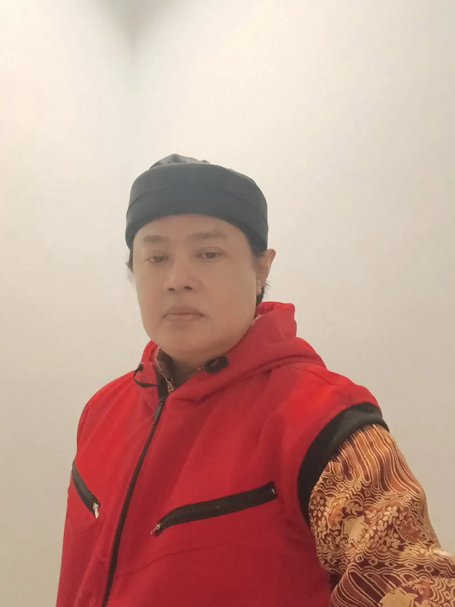
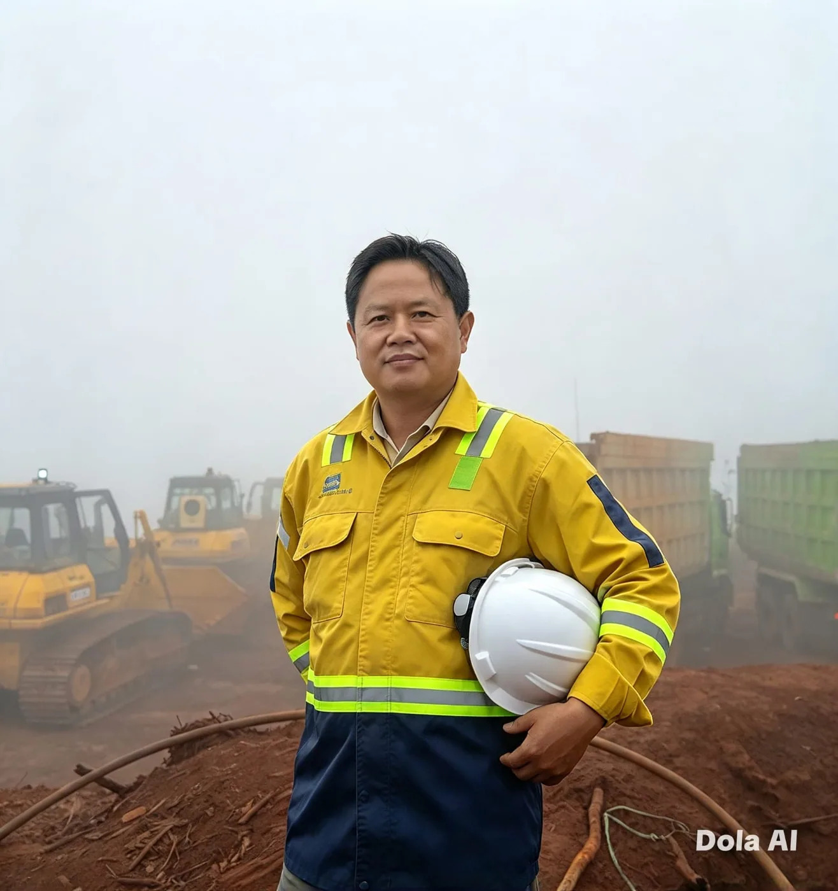
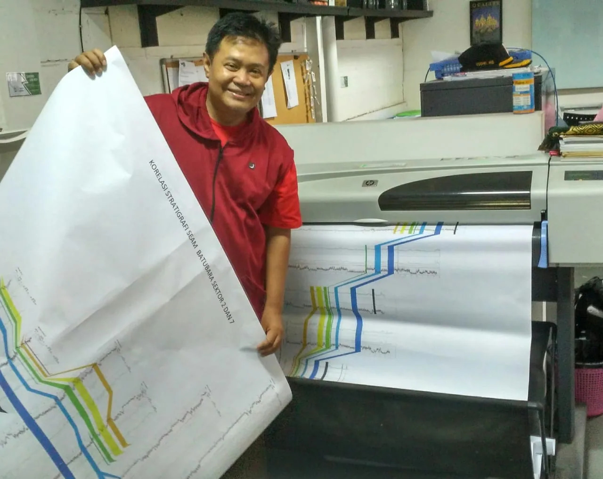
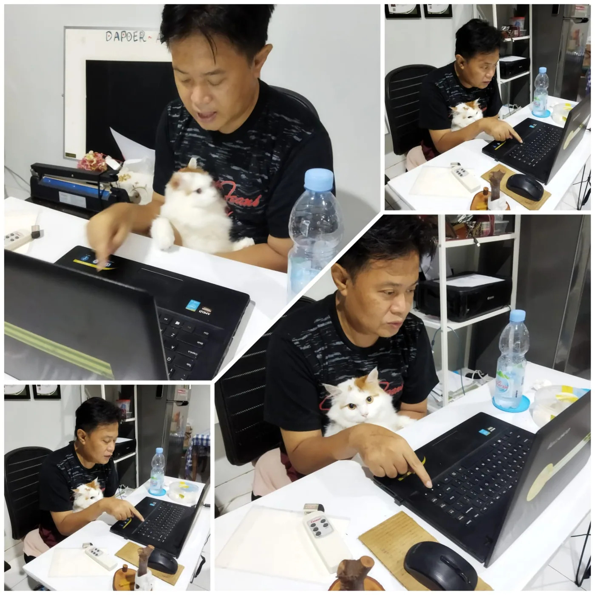

Mining & Exploration
Geologi, pemboran, dan operasi eksplorasi — dari perencanaan titik bor hingga tafsir stratigrafi dan pelaporan.
Yudhi Sakkautama
Exploring Ideas, Building Knowledge, Creating Impact.
Personal Professional Hub
“I work at the intersection of exploration, safety, people, and technology — turning field experience into knowledge and meaningful solutions.”
02 — About Me
Saya bekerja di persimpangan antar bidang: eksplorasi geologi, keselamatan pertambangan, manajemen operasional, dan inovasi digital. Lebih dari 20 tahun perjalanan profesional di industri eksplorasi mineral dan batubara membentuk cara saya memahami pekerjaan — bahwa keputusan teknis yang baik selalu lahir dari pemahaman lapangan, data yang rapi, dan orang-orang yang aman saat bekerja.
Di halaman ini saya berbagi apa yang saya kerjakan, apa yang saya pelajari, apa yang pernah saya bangun, serta organisasi dan proyek yang pernah saya menjadi bagiannya.
03 — Expertise
Empat bidang utama yang membentuk cara saya bekerja di lapangan maupun di meja kerja.
Geologi, pemboran, dan operasi eksplorasi — dari perencanaan titik bor hingga tafsir stratigrafi dan pelaporan.
Penerapan SMKP Minerba, manajemen risiko, dan sistem keselamatan kerja yang benar-benar hidup di lapangan.
Perencanaan, eksekusi, dan kontrol operasional proyek agar sasaran teknis, biaya, dan waktu tetap terjaga.
GIS, teknologi survei, dan solusi digital yang menyederhanakan pekerjaan lapangan serta mempercepat pengambilan keputusan.
04 — Featured Works
Pilih kategori untuk melihat karya dan kontribusi. Setiap kartu memuat peran, tahun, tantangan, dan hasil.

LeadMenyusun kerangka Sistem Manajemen Keselamatan Pertambangan dan mendampingi penerapannya agar tidak berhenti sebagai dokumen.

HSEPengelolaan aspek keselamatan pada kegiatan eksplorasi di area kerja dengan mobilitas tinggi dan medan yang menantang.

DirectRancangan prosedur kerja pemboran yang memperhatikan risiko alat, manusia, dan lingkungan sekitar lokasi bor.

SystemPengembangan cara pemantauan aktivitas operasional agar progres dan kendala terlihat lebih cepat oleh tim.
Kontribusi pada pengembangan aplikasi survei geologi yang membantu pencatatan dan pemetaan data lapangan secara digital.
Penyusunan dokumen teknis dan manajemen yang menjadi rujukan pelaksanaan pekerjaan di lapangan.
Tidak ada proyek pada kategori ini.
Project Timeline
Belajar membaca batuan, data bor, dan dinamika kerja lapangan yang menjadi dasar seluruh karier.
Menangani pelaksanaan pemboran dan operasi eksplorasi di berbagai wilayah kerja.
Mendalami SMKP Minerba, manajemen risiko, dan membangun budaya keselamatan di lapangan.
Menggabungkan pengalaman lapangan dengan teknologi, GIS, dan solusi digital.
05 — Professional Affiliations
Throughout my professional journey, I have had the opportunity to contribute my knowledge, expertise, and experience across various organizations and projects in the mining, mineral exploration, and related industries.
This section highlights selected companies and organizations with which I have been professionally involved. The views and content of each corporate website belong to their respective organizations.
07 — Credentials & Recognition
Kualifikasi Petugas Proteksi Radiasi untuk mendukung kegiatan yang memanfaatkan sumber radiasi.
Kompetensi keselamatan dan kesehatan kerja umum sesuai ketentuan ketenagakerjaan.
Kualifikasi penerapan Sistem Manajemen Keselamatan Pertambangan Mineral dan Batubara.
Pengalaman membangun dan menerapkan sistem keselamatan pertambangan di lingkungan kerja nyata.
Nama sertifikasi, lembaga penerbit, dan status ditulis mengikuti dokumen resmi yang berlaku.
06 — Thoughts & Insights
Ruang untuk berbagi pemikiran dan pengalaman — dibangun bertahap, bukan sekaligus.
Bagaimana disiplin membaca data membuat keputusan eksplorasi lebih terarah dan hemat.
Catatan lapangan tentang mengubah kepatuhan menjadi kebiasaan kerja sehari-hari.
Mengapa perubahan alur data yang sederhana sering terasa paling besar manfaatnya.
Refleksi tentang nilai pengalaman langsung dalam mengambil keputusan teknis.
Photo Gallery
Klik salah satu foto untuk melihat lebih dekat.
08 — Let's Connect
“Good ideas grow through conversations. Let's connect, exchange knowledge, and explore possibilities.”